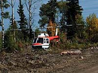

It is important to the forest landowner, the harvesting company and the forest management person to know how much wood there is in a stand of timber. Estimates of the amount of wood in a tree and estimates of the amount of wood in an entire forest can be made before the tree is cut or the forest harvested. |

Tree diameter is measured using devices called dendrometers, such as the Biltmore stick; tree callipers or diameter tape. The diameter of a tree is measured at chest height. |

Tree height is measured using devices called hypsometers, such as the Biltmore stick, the Abney level, the Haga altimeter and the Suunto clinometer. Once the tree diameter and height have been determined, volume tables are used to estimate the amount of wood in the tree. |
 Cruising timber is the term used when estimating
the amount of wood in a timber stand. This is done by measuring
a sample of trees and then estimating from the sample. |
Several units are used for measuring wood.
- Board Foot - A board foot is an unfinished piece of
wood one foot long by one foot wide by one inch thick. The shape
may change, but the volume always remains the same. Lumber is
usually measured in the board foot.
- Gross Weight - The total weight of a stack of wood
is the gross weight. Logs are usually sold by gross weight.
- Cubic Foot - The cubic foot is also used to measure
lumber. A cubic foot is the amount of wood that would be needed
to fill a space one foot wide by one foot thick by one foot high.
One cubic foot contains 1728 cubic inches.
- Cubic Metres - Logs are sold by cubic metres. The amount
of wood needed to fill a space one metre wide by one metre thick
by one metre high is a cubic meter.
- Cords - A cord is a stack of wood four feet by four
feet by eight feet. Firewood is often sold by the cord. Because
there are spaces between the wood, a cord is not an accurate description
of the amount of wood actually in the stack, although it is a
practical method of measuring. Gross weight is a more reliable
measurement.
- Tonnes - A tonne (pronounced tun) is 1000 kilograms and is the mass unit used to measure large objects or loads. Wood chips are measured in tonnes.